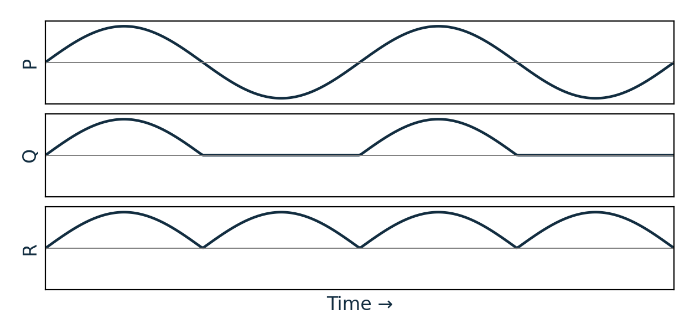
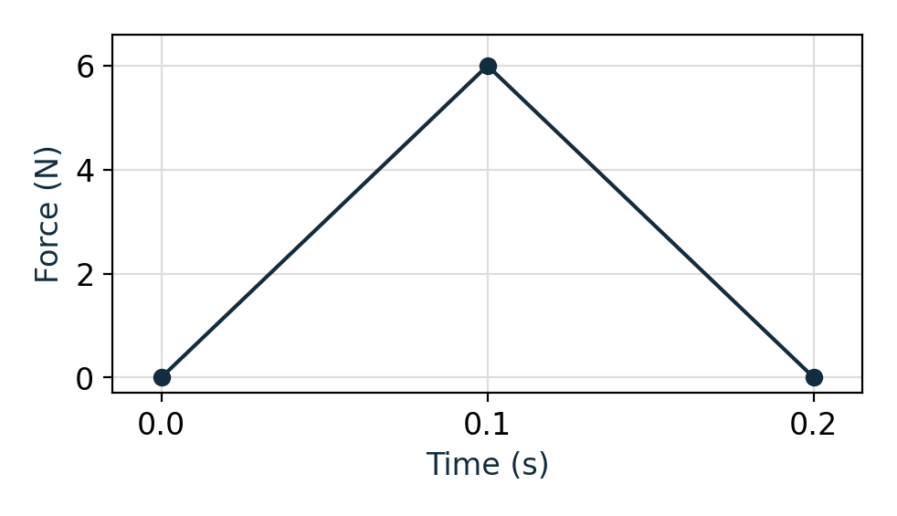
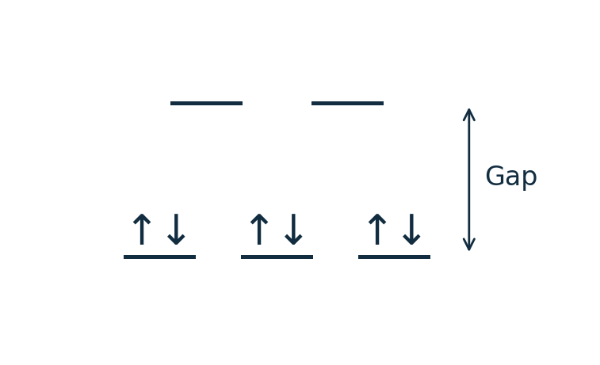
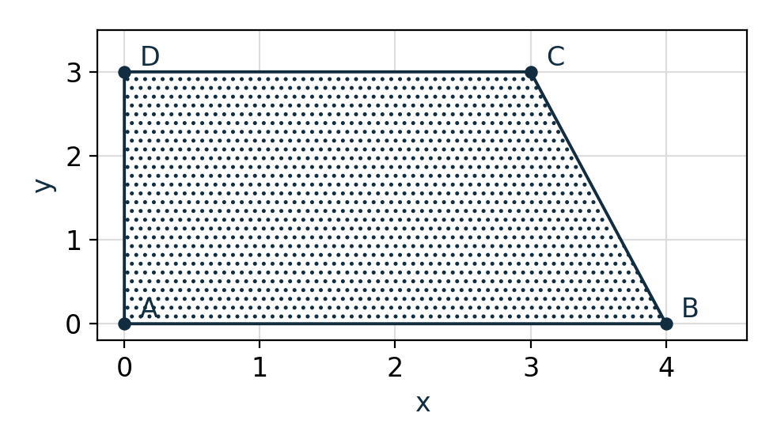

COMEDK UGET Test 7
180 minutes · 180 questions · +1 per correct answer · No negative marking
Physics
Q001. A thin lens has refractive index equal to that of the surrounding liquid. What focal power does its curved shape give in that liquid?
A) A positive power if biconvex
B) A negative power if biconvex
C) Zero
D) The same power as in air
Worked solution
Answer: (C) Zero
Why and working: Lens-maker in a medium contains the factor n_lens/n_medium−1. Equal indices make this factor zero regardless of curvature.
Why not the others: (A) there is no index contrast. (B) the sign cannot be negative when the factor is zero. (D) the index contrast differs from air.
Q002. Two point masses attract one another. Both masses are doubled while their separation also doubles. How does the magnitude of their gravitational force change?
A) It doubles
B) It is unchanged
C) It quadruples
D) It becomes one quarter
Worked solution
Answer: (B) It is unchanged
Why and working: The mass product increases by four and the squared separation also increases by four. These factors cancel in GMm/r².
Why not the others: (A) one mass change is omitted. (C) ignores the change in distance. (D) ignores the changes in masses.
Q003. A fixed single slit is moved farther from the screen without changing the source wavelength or slit width. What happens to angular width and physical width of the central maximum?
A) Both grow
B) Both stay the same
C) Angular width grows, physical width stays the same
D) Angular width stays the same, physical width grows
Worked solution
Answer: (D) Angular width stays the same, physical width grows
Why and working: First-minimum angles are set by wavelength and slit width. At a greater screen distance the same angular span subtends a wider physical maximum.
Why not the others: (A) the screen does not set diffraction angles. (B) physical width depends on distance. (C) different angular and distance effects are reversed.
Q004. Which trace is the full-wave rectified output of an ideal sinusoidal source, with the load polarity convention chosen positive?

A) Trace P
B) Trace Q
C) Trace R
D) Traces P and Q
Worked solution
Answer: (C) Trace R
Why and working: R reflects every negative half-wave into positive voltage and has one lobe per half period. P is alternating and Q removes rather than flips the negative lobes.
Why not the others: (A) P is the unaltered sine. (B) Q is half-wave rectification. (D) neither P nor Q produces positive output on both halves.
Q005. For the same material one experiment uses hydrostatic pressure and another uses uniaxial tension. Which strain belongs in calculating the bulk modulus?
A) Fractional increase in length
B) Transverse strain divided by longitudinal strain
C) Angular change due to shearing
D) Fractional decrease in volume
Worked solution
Answer: (D) Fractional decrease in volume
Why and working: Bulk modulus compares pressure increase with the magnitude of volume strain. Young’s modulus relates axial stress to axial strain.
Why not the others: (A) this is the axial strain for Young’s modulus. (B) this ratio concerns Poisson’s ratio. (C) shear modulus uses angular distortion.
Q006. A closed surface encloses +3q and −q. An external additional +q is moved from outside to inside. Which pair gives the original flux and the change in flux?
A) 2q/ε₀ and +q/ε₀
B) 3q/ε₀ and zero
C) 2q/ε₀ and zero
D) q/ε₀ and +3q/ε₀
Worked solution
Answer: (A) 2q/ε₀ and +q/ε₀
Why and working: Gauss’s law gives initial flux (3q−q)/ε₀. After crossing, the new charge contributes another +q/ε₀ to the flux.
Why not the others: (B) the enclosed negative charge reduces the original total. (C) a charge that crosses increases the enclosed total. (D) the original signed charge is +2q.
Q007. A dielectric slab is inserted fully into a connected parallel-plate capacitor, with the gap and battery voltage fixed. Which statement about its induced bound charge is correct?
A) Both slab faces acquire positive net bound charge
B) At each interface the bound charge lies opposite in sign to the facing free plate charge
C) No polarisation is possible because the voltage is fixed
D) The dielectric acquires a net free charge equal to the battery’s output
Worked solution
Answer: (B) At each interface the bound charge lies opposite in sign to the facing free plate charge
Why and working: The field aligns or induces molecular dipoles. Their negative ends face the positive plate, and their positive ends face the negative plate. The two bound surface charges therefore oppose the plate charges locally.
Why not the others: (A) bound surface charges on the two faces have opposite signs. (C) fixed voltage still establishes a field. (D) bound charge reflects dipoles rather than net free transfer to the slab.
Q008. A hydraulic press has smaller and larger pistons of areas 2 cm² and 20 cm². Ignoring losses and height differences, which pair gives pressure ratio and force ratio, large to small?
A) 10 and 1
B) 10 and 10
C) 1 and 1
D) 1 and 10
Worked solution
Answer: (D) 1 and 10
Why and working: Pascal’s principle transmits the same additional pressure. The force is pressure times area, hence the tenfold force ratio.
Why not the others: (A) pressure does not multiply with area. (B) only force has the area factor. (C) equal pressure need not give equal force.
Q009. A cell with emf 9 V has terminal voltage 7 V when it supplies 2 A. What terminal voltage is expected if an external charger drives 1 A into it?
A) 8 V
B) 9 V
C) 7 V
D) 10 V
Worked solution
Answer: (D) 10 V
Why and working: During discharge the internal drop is 2 V, so r=2/2=1 Ω. Charging reverses current through the internal resistance and the terminal voltage is E+Ir=10 V.
Why not the others: (A) keeps the discharge sign. (B) would imply zero current or zero internal resistance. (C) uses the original loaded reading.
Q010. A rigid wire is bent into two equal perpendicular segments, with a steady current passing first east and then north. A uniform field points east. What is the direction of net magnetic force?
A) Downward
B) Upward
C) North
D) Zero
Worked solution
Answer: (A) Downward
Why and working: The eastward segment is parallel to the field so its force vanishes. For northward current the cross product north×east points down.
Why not the others: (B) reverses the order in the cross product. (C) the force is perpendicular to the northward segment. (D) the second segment carries perpendicular current.
Q011. A steel metre rule is calibrated at a lower temperature than that of a measurement. It then expands uniformly. Does it overestimate or underestimate the actual length of a fixed object?
A) It overestimates because each marked interval is longer
B) It reads exactly because both ends expand equally
C) It overestimates because the intervals shrink
D) It underestimates because each marked interval is physically longer
Worked solution
Answer: (D) It underestimates because each marked interval is physically longer
Why and working: The same object covers fewer divisions when one nominal centimetre occupies more actual length.
Why not the others: (A) longer divisions mean fewer displayed units. (B) the spacing changes even if zero is held fixed. (C) heating normally expands the scale.
Q012. A ferromagnetic material is taken above its Curie temperature and cooled below it in a weak field. What typically becomes possible again below the transition?
A) Ferromagnetic order in its domains
B) A permanent loss of magnetic interactions
C) An isolated magnetic pole appearing
D) A change in sign of its atomic electric charge
Worked solution
Answer: (A) Ferromagnetic order in its domains
Why and working: Below the Curie transition, exchange interactions can sustain ordered regions. Heating above it destroys that long-range order.
Why not the others: (B) magnetic interactions remain. (C) domain order does not create monopoles. (D) magnetic order does not change electric charge.
Q013. At the instant a single loop’s magnetic flux changes sign in a sinusoidal AC generator, what is the magnitude of induced emf?
A) Maximum
B) Zero
C) Always half its peak
D) Undefined
Worked solution
Answer: (A) Maximum
Why and working: Flux crosses zero with its greatest slope magnitude. Faraday’s law makes induced emf magnitude largest then.
Why not the others: (B) it vanishes at flux extrema rather than zero crossings. (C) the derivative magnitude is at its peak. (D) the sinusoidal derivative is well-defined.
Q014. An ideal gas undergoes an adiabatic change and its internal energy rises. What direction of work transfer is required?
A) The gas does positive net work on its surroundings
B) There is no work transfer
C) Net work is done on the gas
D) Heat enters instead of work
Worked solution
Answer: (C) Net work is done on the gas
Why and working: Adiabatic means Q=0. Under ΔU=Q−W_by, increasing U requires W_by negative, so the surroundings do work on the gas.
Why not the others: (A) positive work by the gas would lower U. (B) nonzero ΔU then could not occur. (D) heat input is excluded by the condition.
Q015. A diverging thin lens of focal length −18 cm forms a virtual image one third as tall as a real object. Find the object distance in front of it.
A) 12 cm
B) 36 cm
C) 18 cm
D) 54 cm
Worked solution
Answer: (B) 36 cm
Why and working: For u=−d the upright image has v=−d/3. Thus 1/f=1/v−1/u=−3/d+1/d=−2/d. Setting f=−18 gives d=36 cm.
Why not the others: (A) uses the image-distance magnitude. (C) places the object at one focal distance. (D) multiplies f by three instead of solving.
Q016. A straight charged filament has two adjacent sections of uniform line charge density, and a cylindrical Gaussian surface spans 2 m of one section carrying +3 μC/m and 1 m of the next carrying −2 μC/m. What total flux passes through the closed cylinder?
A) 8 μC/ε₀
B) 1 μC/ε₀
C) 4 μC/ε₀
D) Zero
Worked solution
Answer: (C) 4 μC/ε₀
Why and working: The enclosed charge is the signed sum λL: 3×2−2×1=4 μC. Gauss’s law gives the flux without treating the field as uniform along the cylinder.
Why not the others: (A) adds unsigned contributions. (B) subtracts densities without their lengths. (D) the weighted charge does not cancel.
Q017. Why does an ideal gas at equilibrium exert comparable pressure on walls facing different directions?
A) All molecules always have zero speed
B) Molecular velocity directions are distributed isotropically
C) Every molecule moves perpendicular to the same wall
D) The walls are the only source of gas momentum
Worked solution
Answer: (B) Molecular velocity directions are distributed isotropically
Why and working: Random isotropic thermal velocities give equal mean squared components along perpendicular axes, hence equal mean normal momentum transfer.
Why not the others: (A) molecules have thermal speeds. (C) there is no privileged wall direction. (D) molecules carry momentum between collisions.
Q018. Three equal capacitors have equivalent capacitance C when all connected in parallel. What equivalent capacitance do the same three have when all are in series?
A) C/9
B) C/3
C) 3C
D) C
Worked solution
Answer: (A) C/9
Why and working: Each capacitor has value C/3. Three equal capacitances in series have one third of that individual value, namely C/9.
Why not the others: (B) this is the value of one capacitor. (C) series reduces the equivalent capacitance. (D) equal nominal parts do not give equal series and parallel values.
Q019. A 1.5 V cell of internal resistance 0.5 Ω carries current 1 A through a series aiding 2.0 V cell of internal resistance 1.0 Ω. What is the total terminal voltage of the pair?
A) 2.0 V
B) 3.5 V
C) 5.0 V
D) 1.5 V
Worked solution
Answer: (A) 2.0 V
Why and working: Aiding emfs add to 3.5 V. Internal resistances add to 1.5 Ω, giving 1.5 V drop at 1 A. The terminal voltage is 2.0 V.
Why not the others: (B) ignores internal drops. (C) adds the voltage lost inside the cells. (D) this is the internal drop.
Q020. A displacement is x=A sin(ωt+π/6). At t=0, what displacement and velocity sign are present?
A) A/2 and negative velocity
B) √3 A/2 and positive velocity
C) A/2 and positive velocity
D) Zero and positive velocity
Worked solution
Answer: (C) A/2 and positive velocity
Why and working: At t=0 the sine gives 1/2. Differentiation gives v=Aω cos(π/6)>0.
Why not the others: (A) cosine is positive at the initial phase. (B) this is the cosine rather than the sine factor for position. (D) nonzero phase offsets the start position.
Q021. Parallel long wires carry fixed currents in the same direction. A third long wire midway between them carries negligible probe current. When the two outer currents are equal, what is the net field at the midpoint?
A) Twice the field of one outer wire
B) Zero
C) Toward one wire along their connecting line
D) Nonzero and parallel to the wires
Worked solution
Answer: (B) Zero
Why and working: At the midpoint the distances match but the point lies on opposite sides of the two wires. Their circular fields point oppositely and cancel.
Why not the others: (A) adds magnitudes without direction. (C) the individual fields are perpendicular to the joining line. (D) the wire fields lie transverse to the wire axes.
Q022. An ideal transformer is driven by unchanged AC primary voltage. If its secondary winding is rewound with half as many turns and the original resistive load is retained, how does primary current change?
A) It halves
B) It doubles
C) It falls to one quarter
D) It stays fixed
Worked solution
Answer: (C) It falls to one quarter
Why and working: Secondary voltage scales with turn count, so it halves. With the same resistance, secondary power V_s²/R falls by four. At fixed ideal primary voltage, primary current falls by the same factor.
Why not the others: (A) voltage alone is only one factor of load power. (B) the load receives less power. (D) fixed primary voltage does not fix current.
Q023. A wave has y=0.02 cos(4πx−20πt) in SI units. How long does a fixed crest take to move 2.5 m?
A) 0.10 s
B) 1.25 s
C) 0.50 s
D) 12.5 s
Worked solution
Answer: (C) 0.50 s
Why and working: The phase velocity is ω/k=20π/(4π)=5 m/s. The crest time over 2.5 m is 2.5/5=0.50 s.
Why not the others: (A) this equals one period and covers only one wavelength. (B) does not use the phase-speed ratio. (D) multiplies distance by speed.
Q024. A +8 D lens and a second thin lens in contact make a combination of focal length −0.50 m. What can be inferred about the second lens?
A) It has power −10 D and is diverging
B) It has power −6 D and is diverging
C) It has power +6 D and is converging
D) It has power +10 D and is converging
Worked solution
Answer: (A) It has power −10 D and is diverging
Why and working: The combined power is 1/(−0.50 m)=−2 D. Signed addition gives P₂=−2−8=−10 D.
Why not the others: (B) uses the combined focal length with the wrong sign. (C) changes both the subtractand and sign. (D) would make the combination converge.
Q025. An infinite sheet has negative surface charge density. In which direction is its electric field just above the sheet?
A) Away from the sheet
B) Toward the sheet
C) Parallel to its surface
D) Zero everywhere above it
Worked solution
Answer: (B) Toward the sheet
Why and working: The field is perpendicular by planar symmetry, pointing toward negative charge on both sides.
Why not the others: (A) describes a positively charged sheet. (C) in-plane components cancel. (D) nonzero surface density gives nonzero normal field.
Q026. Using round-half-up for a tie, round 0.004785 to three significant figures.
A) 0.00478
B) 0.005
C) 0.004785
D) 0.00479
Worked solution
Answer: (D) 0.00479
Why and working: Count from the first nonzero digit, 4, then retain 7 and 8. Using ordinary half-up rounding the following 5 advances 8 to 9.
Why not the others: (A) truncates at the third digit under the stated rounding. (B) keeps only one significant digit. (C) retains four significant digits.
Q027. A parallel-plate air capacitor stays attached to a battery. The gap is doubled and a dielectric of relative permittivity 2 fills the new gap. What happens to its capacitance and free charge?
A) Both are unchanged
B) Both double
C) Both halve
D) Capacitance is unchanged and charge halves
Worked solution
Answer: (A) Both are unchanged
Why and working: C=κε₀A/d. Doubling κ and d leaves C fixed; the battery then fixes Q=CV at its original value.
Why not the others: (B) ignores the larger spacing. (C) ignores the dielectric. (D) unchanged capacitance and voltage fix the charge.
Q028. At a junction a 5 A current enters from one branch and 2 A leaves through another. A third branch is initially drawn with an arrow also entering and signed current I. What is I?
A) +3 A
B) −7 A
C) +7 A
D) −3 A
Worked solution
Answer: (D) −3 A
Why and working: Using the assumed signs, 5+I=2, hence I=−3 A. The actual third current exits.
Why not the others: (A) the numerical magnitude is right but the arrow is opposite. (B) adds incoming and outgoing magnitudes. (C) does not enforce current conservation.
Q029. A cyclist moves 9 km east during the first half hour and 3 km west during the second half hour. Which pair gives average speed and magnitude of average velocity?
A) 12 km/h and 6 km/h
B) 6 km/h and 12 km/h
C) 6 km/h and 6 km/h
D) 12 km/h and 12 km/h
Worked solution
Answer: (A) 12 km/h and 6 km/h
Why and working: Total path length is 12 km in one hour, while the signed displacement is 9−3=6 km east.
Why not the others: (B) reverses distance and displacement. (C) out-and-back travel adds distance. (D) the westward leg reduces displacement.
Q030. Two identical adjacent coplanar current loops are viewed from the same side. One current is clockwise and the other anticlockwise. What is their combined magnetic dipole moment?
A) Zero
B) Twice the magnitude of one loop along its moment
C) A vector lying in the loop plane
D) The same magnitude as one loop
Worked solution
Answer: (A) Zero
Why and working: Their magnetic dipole moments have equal magnitudes IA and perpendicular axes of opposite sense, so the vector sum vanishes.
Why not the others: (B) opposite moment directions cancel. (C) each moment is normal to the plane. (D) the two moments do not leave a residual.
Q031. A prism has apex angle 50°. The internal refraction angles measured from the two face normals on its ray path are r₁=20° and r₂ unknown. What is r₂?
A) 20°
B) 50°
C) 30°
D) 70°
Worked solution
Answer: (C) 30°
Why and working: From the internal ray and prism geometry, r₁+r₂=A. Thus r₂=50°−20°=30°.
Why not the others: (A) equal internal angles are a special minimum-deviation case. (B) would require r₁=0°. (D) the angles add to A rather than differ by A.
Q032. Two nonzero vectors satisfy a=−2b. Which pair describes successive changes that would turn a into b?
A) Reverse its direction and double its length
B) Keep the direction and halve its length
C) Rotate by 90° and halve its length
D) Reverse its direction and halve its length
Worked solution
Answer: (D) Reverse its direction and halve its length
Why and working: Multiplying a by −1/2 produces b. The minus sign reverses the direction and magnitude 1/2 scales the length.
Why not the others: (A) would give four times b. (B) would give −b. (C) the vectors are antiparallel, not perpendicular.
Q033. A thin uniformly charged spherical shell has radius R and charge +Q. Compare the field at r=R/2 with the field at r=2R.
A) Equal and outward at both radii
B) Four times stronger inside than outside
C) Zero inside, kQ/(4R²) radially outward outside
D) Zero at both radii
Worked solution
Answer: (C) Zero inside, kQ/(4R²) radially outward outside
Why and working: The inner concentric Gaussian sphere encloses no charge and symmetry forces its field to zero. Outside, E=kQ/r², giving kQ/(4R²).
Why not the others: (A) enclosed charge differs. (B) inverse-square exterior law cannot be applied inside. (D) the outside Gaussian sphere encloses +Q.
Q034. Two identical capacitors each store energy U when separately charged. After isolation, one gives a quarter of its plate charge to the same-sign plates of the other. What is their resulting total stored energy in terms of U?
A) 17U/8
B) 2U
C) 3U/2
D) 25U/16
Worked solution
Answer: (A) 17U/8
Why and working: At fixed C, energies scale as charge squared. Their new charges have factors 3/4 and 5/4. The total is (9/16+25/16)U=17U/8.
Why not the others: (B) this is the starting total. (C) does not account for the receiving capacitor’s energy. (D) gives only the receiving capacitor’s energy.
Q035. A 0.20 kg ball experiences the force–time pulse in the figure. Its initial velocity is zero. What is its final velocity along the plotted force axis?

A) 6 m/s
B) 1.5 m/s
C) 0.6 m/s
D) 3 m/s
Worked solution
Answer: (D) 3 m/s
Why and working: The triangular pulse has base 0.20 s and height 6 N. Impulse is ½×0.20×6=0.60 N·s. Divide by 0.20 kg to get 3 m/s.
Why not the others: (A) uses the full bounding rectangle. (B) halves the triangular area a second time. (C) this is the impulse value rather than speed.
Q036. A balanced bridge has equal resistance ratios in its two arms. If both resistors in only one arm are doubled, what happens to the detector current?
A) It doubles from a nonzero value
B) It becomes nonzero because the total bridge current has changed
C) It stays zero
D) It must reverse direction
Worked solution
Answer: (C) It stays zero
Why and working: The changed arm keeps the same ratio and midpoint voltage. The current in that arm changes but a balanced detector still has no voltage across it.
Why not the others: (A) the original detector current was zero. (B) the total supply current does not set the voltage difference at the detector. (D) no detector current exists to reverse.
Q037. A galvanometer deflects 30 divisions for a 3 mA current. What current produces a 12-division deflection in its linear range?
A) 7.5 mA
B) 1.2 mA
C) 0.25 mA
D) 3 mA
Worked solution
Answer: (B) 1.2 mA
Why and working: Sensitivity is 30/3=10 divisions per mA, so 12 divisions require 12/10=1.2 mA.
Why not the others: (A) reverses the deflection ratio. (C) uses the reciprocal of a calibration ratio. (D) corresponds to the original full deflection.
Q038. A winch lifts a load weighing 500 N by 8 m in 20 s at constant speed. Its input power is 250 W. At what average rate does energy go into losses?
A) 200 W
B) 50 W
C) 250 W
D) 450 W
Worked solution
Answer: (B) 50 W
Why and working: Useful power is force times vertical speed, 500×8/20=200 W. Loss rate is 250−200=50 W.
Why not the others: (A) this is the useful output. (C) ignores useful work. (D) adds input and output instead of taking their difference.
Q039. A compound microscope objective gives linear magnification magnitude 12. The eyepiece is used as a simple magnifier at normal adjustment, with least distance of distinct vision 25 cm and focal length 5 cm. What overall magnitude follows?
A) 17
B) 12
C) 60
D) 2.4
Worked solution
Answer: (C) 60
Why and working: At normal adjustment the eyepiece gives angular magnification D/f=25/5=5. Multiply this by the objective magnitude 12.
Why not the others: (A) adds the factors. (B) omits the eyepiece factor. (D) divides by the magnifier factor.
Q040. Why can a reflecting astronomical telescope use a large mirror more conveniently than an equivalently large objective lens?
A) Its mirror is unaffected by all atmospheric distortion
B) A mirror can be supported across its back, whereas a transmitting lens must keep its aperture clear
C) Its mirror requires light to pass through more glass
D) A reflecting objective cannot form a real image
Worked solution
Answer: (B) A mirror can be supported across its back, whereas a transmitting lens must keep its aperture clear
Why and working: A reflecting surface works from the front, so rear mechanical support need not block the beam. A large transmitting lens is generally supported at its edge.
Why not the others: (A) seeing effects affect either telescope. (C) the objective works by reflection. (D) a concave reflecting objective forms a real intermediate image.
Q041. A particle at position r=(2,0,0) m has force F=(0,3,0) N at that instant. What change in angular momentum about the origin would this torque produce over 0.5 s if the torque stayed constant?
A) −3 kg·m²/s along z
B) +6 kg·m²/s along z
C) +3 kg·m²/s along z
D) Zero
Worked solution
Answer: (C) +3 kg·m²/s along z
Why and working: The torque r×F has z component +6 N·m. Its angular impulse over 0.5 s is +3 kg·m²/s.
Why not the others: (A) reverses the cross product. (B) this is the torque magnitude before time multiplication. (D) nonparallel r and F give nonzero torque.
Q042. Two identical conducting spheres carry net charges +4 nC and −4 nC. If touched and separated symmetrically, what charge remains on each?
A) 0 nC
B) +4 nC
C) −4 nC
D) +2 nC
Worked solution
Answer: (A) 0 nC
Why and working: They share the conserved total 0 in equal amounts because they are identical and in a symmetric setup.
Why not the others: (B) would create net positive charge. (C) would create net negative charge. (D) the signed initial charges sum to zero.
Q043. A positive point charge creates potential V at radius r with zero at infinity. What potential does it create at 4r?
A) V/16
B) V/4
C) 4V
D) V
Worked solution
Answer: (B) V/4
Why and working: Potential is kQ/r, so at four times the radius it is one quarter as large.
Why not the others: (A) uses the electric field’s inverse-square rule. (C) inverts the distance dependence. (D) the reference at infinity does not make potential constant.
Q044. A satellite is at altitude R above a spherical planet of radius R. Its mass is unchanged. How much more does it weigh at the surface than at that altitude, expressed as a fraction of its surface weight?
A) 3/4
B) 1/4
C) 1/2
D) 4
Worked solution
Answer: (A) 3/4
Why and working: At altitude R the centre distance is 2R, so gravity and weight fall to 1/4 of their surface value. The difference is 1−1/4=3/4.
Why not the others: (B) this is the remaining weight fraction. (C) uses inverse first-power scaling. (D) this is the surface-to-altitude weight ratio.
Q045. Equal steady currents pass through metals X and Y of equal cross-sectional area. X has greater density of mobile electrons. Which has the smaller magnitude of electron drift speed?
A) Y
B) They must have identical drift speeds
C) X
D) The comparison is impossible without the voltage
Worked solution
Answer: (C) X
Why and working: With equal I, A and elementary charge, I=neAv_d gives v_d inversely proportional to carrier density. The denser population needs less average drift.
Why not the others: (A) reverses the dependence. (B) carrier densities differ. (D) the supplied current fixes the comparison.
Q046. How can Oersted’s compass experiment distinguish a current’s magnetic effect from a permanent change to the wire?
A) The compass must deflect the same way for every current sign
B) The compass deflection switches sense when the wire current is reversed
C) The wire’s diameter changes periodically as a defining observation
D) A removed compass keeps deflecting toward every nearby wire
Worked solution
Answer: (B) The compass deflection switches sense when the wire current is reversed
Why and working: Reversing the current reverses the wire’s magnetic field. In a suitable geometry it produces opposite compass deviations, unlike a fixed persistent change.
Why not the others: (A) a direction-independent response would not track current sign. (C) the key observable is compass deflection. (D) ordinary noncurrent wires do not produce this response.
Q047. Two blocks of the same dimensions, made of different materials, receive equal shear stress. Block A shows twice the small angular strain of B. Which has larger shear modulus and by what factor?
A) A, twice B’s
B) B, four times A’s
C) They are equal
D) B, twice A’s
Worked solution
Answer: (D) B, twice A’s
Why and working: Shear modulus is shear stress divided by shear strain. Equal stresses and half the strain give B twice the modulus.
Why not the others: (A) inverts the inverse strain dependence. (B) there is no squared strain factor. (C) different strains at the same stress distinguish the moduli.
Q048. Which construction can make a steady solenoid’s north and south ends exchange roles without moving the coil?
A) Increase its current while keeping the same direction
B) Add similar turns with the same winding sense
C) Reverse the winding current
D) Use a stronger magnetic core without reversing the current
Worked solution
Answer: (C) Reverse the winding current
Why and working: The winding direction and current sense together determine the axial field by the right-hand rule. Reversing current exchanges the ends.
Why not the others: (A) increasing magnitude alone leaves the axial sense fixed. (B) matching turns reinforce the same polarity. (D) a core changes field magnitude without reversing drive.
Q049. The flux per turn of a 40-turn loop changes from +6 mWb to −2 mWb in 0.20 s. What is its mean emf magnitude?
A) 0.8 V
B) 0.4 V
C) 16 V
D) 1.6 V
Worked solution
Answer: (D) 1.6 V
Why and working: The signed change is −8 mWb. Faraday’s law gives 40×0.008/0.20=1.6 V.
Why not the others: (A) uses the difference of flux magnitudes instead of signed values. (B) understates the number of turns or change. (C) misplaces a factor of ten in conversion.
Q050. Two small spheres fall at terminal speed in the same viscous liquid in the Stokes regime. They are made of the same material but one radius is doubled. How does its terminal speed compare?
A) Twice as large
B) Four times as large
C) Eight times as large
D) Half as large
Worked solution
Answer: (B) Four times as large
Why and working: Weight minus buoyancy scales as r³, while drag is proportional to rv. At terminal balance v is proportional to r², giving fourfold speed.
Why not the others: (A) keeps the radius dependence of drag without full volume scaling. (C) uses weight scaling alone. (D) reverses the overall size dependence.
Q051. A sinusoidal voltage varies between −10 V and +10 V. What is its rms voltage?
A) 10 V
B) 10√2 V
C) 0 V
D) 5√2 V
Worked solution
Answer: (D) 5√2 V
Why and working: Its amplitude is 10 V, so rms is 10/√2=5√2 V.
Why not the others: (A) this is peak amplitude. (B) this multiplies instead of dividing by √2. (C) this is the signed mean.
Q052. In a vacuum capacitor gap with area A, the field becomes constant even though it remains nonzero. What is the displacement current through the whole gap in that interval?
A) ε₀EA
B) Always equal to the earlier charging current
C) It is proportional to E rather than its rate of change
D) Zero
Worked solution
Answer: (D) Zero
Why and working: Displacement current equals ε₀ times the electric-flux derivative. A constant field over fixed area has zero derivative.
Why not the others: (A) ε₀EA is proportional to flux rather than its derivative. (B) the present derivative determines it. (C) a static field does not give displacement current.
Q053. Fresh water is cooled from 8 °C to 4 °C and then to 1 °C without freezing. How does density behave across those stages?
A) It decreases throughout
B) It first increases and then decreases
C) It increases throughout
D) It stays constant above freezing
Worked solution
Answer: (B) It first increases and then decreases
Why and working: Water’s density peaks near 4 °C. Cooling toward that temperature raises density, and further cooling below it lowers density.
Why not the others: (A) approaching 4 °C from above increases density. (C) cooling below the maximum reduces density. (D) liquid water’s density changes before freezing.
Q054. A concave mirror of focal-length magnitude 10 cm has an object 5 cm in front of it. What image does it form?
A) An upright virtual image 10 cm behind the mirror
B) An inverted real image 10 cm in front
C) An upright virtual image 5 cm behind the mirror
D) A real image at infinity
Worked solution
Answer: (A) An upright virtual image 10 cm behind the mirror
Why and working: Using f=−10 and u=−5 gives 1/v=−1/10+1/5=+1/10. Thus v=+10 cm and magnification −v/u=+2.
Why not the others: (B) positive v is behind the mirror here. (C) misapplies equality of image and object distances. (D) infinity would require the object at the focus.
Q055. What does the spacing between consecutive plane wavefronts of identical phase represent in a uniform medium?
A) One period measured in metres
B) The frequency divided by wavelength
C) One wavelength measured along the normal
D) The wave speed alone
Worked solution
Answer: (C) One wavelength measured along the normal
Why and working: A wavefront is a surface of constant phase. Adjacent surfaces one cycle apart are separated by λ in the direction of propagation.
Why not the others: (A) period is a time. (B) that expression is not a distance. (D) speed needs multiplication by one period to give λ.
Q056. An ideal gas gains 300 J of internal energy while rejecting 200 J of heat. How much net work is done on the gas?
A) 100 J
B) 500 J
C) −500 J
D) 200 J
Worked solution
Answer: (B) 500 J
Why and working: Write ΔU=Q+W_on. Here 300=−200+W_on, hence W_on=500 J.
Why not the others: (A) treats heat rejection as positive heat input. (C) reverses the work direction. (D) balances heat alone without increasing U.
Q057. At fixed incident light intensity, frequency is raised from below to above a metal’s threshold. Which observation is central to the photoelectric effect?
A) Below threshold the same number of electrons always appears if enough time elapses
B) Emission begins only once the threshold is reached or exceeded
C) The threshold disappears if the collector voltage is zero
D) Electrons have greater stopping voltage below threshold than above it
Worked solution
Answer: (B) Emission begins only once the threshold is reached or exceeded
Why and working: The photon energy hf must at least equal the work function before single-photon emission can occur. Waiting does not raise individual photon energy.
Why not the others: (A) a long exposure does not pool ordinary one-photon energies. (C) collector voltage does not supply the microscopic energy for photoemission. (D) below threshold there is no corresponding photoelectron stopping voltage.
Q058. An alpha beam passes near a compact positive nucleus. Two otherwise identical trajectories differ only in their initial transverse offset. Why is the large-angle trajectory associated with the smaller offset?
A) Shorter offset makes the positive nucleus electrically negative
B) Greater offset brings the alpha particle closer to the nucleus
C) The alpha particle is bent mainly by attraction to the nucleus
D) It experiences stronger repulsion during its closer encounter
Worked solution
Answer: (D) It experiences stronger repulsion during its closer encounter
Why and working: The positively charged alpha particle is repelled by the nucleus. At smaller offset the Coulomb deflection becomes stronger for fixed energy.
Why not the others: (A) charge signs do not change. (B) larger offset moves the incident path away from the centre. (C) the alpha particle and nucleus repel.
Q059. Two ideal gases are at the same absolute temperature. The mass of one molecule of X is four times that of Y. Compare their rms speeds.
A) v_X=v_Y/2
B) v_X=2v_Y
C) v_X=v_Y/4
D) v_X=v_Y
Worked solution
Answer: (A) v_X=v_Y/2
Why and working: At the same temperature mean translational kinetic energy is the same. Using ½mv_rms² then gives inverse square-root mass scaling.
Why not the others: (B) reverses the mass dependence. (C) misses the square root. (D) equal energies permit different speeds.
Q060. Two nuclei have the same mass number A but different atomic numbers. Which quantity is approximately the same according to the empirical nuclear radius rule?
A) Their proton counts
B) Their neutron counts
C) Their total electrical charges
D) Their radii
Worked solution
Answer: (D) Their radii
Why and working: The leading radius estimate R≈R₀A^(1/3) depends on the nucleon count alone.
Why not the others: (A) different atomic numbers give different proton counts. (B) at fixed A, changing proton count changes neutron count. (C) nuclear charge equals Ze.
Chemistry
Q061. Two equal-volume solutions contain 0.20 and 0.60 mol of one solute. With additive volumes, what is their mixed molarity relative to the more concentrated original?
A) 4/3
B) 1/3
C) 1/2
D) 2/3
Worked solution
Answer: (D) 2/3
Why and working: For common volume V, mixed molarity is 0.80/(2V)=0.40/V, divided by the larger original value 0.60/V.
Why not the others: (A) uses one volume instead of two. (B) compares the original amounts. (C) treats the dilute solution as pure solvent.
Q062. During radical chlorination of an alkane, which event initiates the chain by creating radicals from a nonradical precursor?
A) Two Cl radicals recombine
B) A Cl radical removes H from the alkane
C) An alkyl radical abstracts chlorine from Cl₂
D) Cl₂ splits into two Cl radicals
Worked solution
Answer: (D) Cl₂ splits into two Cl radicals
Why and working: Light initiates homolytic cleavage of the chlorine bond. The two fragments each retain one electron.
Why not the others: (A) this is termination. (B) this uses a radical that already exists. (C) this is a propagation step.
Q063. With standard reduction potentials +0.80 V for Ag⁺/Ag and +0.34 V for Cu²⁺/Cu, what standard emf is predicted for Ag⁺ reduction by Cu metal?
A) +1.14 V
B) +1.26 V
C) +0.46 V
D) −0.46 V
Worked solution
Answer: (C) +0.46 V
Why and working: Ag⁺ is reduced at the cathode. Subtract copper’s reduction potential from silver’s: 0.80−0.34=0.46 V. Balancing electrons does not multiply potentials.
Why not the others: (A) adds both reductions. (B) applies a stoichiometric multiplier to a potential. (D) reverses the cell direction.
Q064. At one instant, 3A → 2B consumes A at 0.12 mol L⁻¹ s⁻¹. What is its normalised reaction rate?
A) 0.040 mol L⁻¹ s⁻¹
B) 0.080 mol L⁻¹ s⁻¹
C) 0.12 mol L⁻¹ s⁻¹
D) 0.36 mol L⁻¹ s⁻¹
Worked solution
Answer: (A) 0.040 mol L⁻¹ s⁻¹
Why and working: The normalised rate is −(1/3)d[A]/dt=0.12/3=0.040.
Why not the others: (B) this is the appearance rate of B. (C) this is the disappearance rate of A before dividing. (D) multiplies by the stoichiometric coefficient.
Q065. A mixture contains 8 g O₂ and 8 g CH₄ with molar masses 32 and 16 g/mol. What is the ratio of their molecule counts O₂:CH₄?
A) 1:2
B) 1:1
C) 2:1
D) 1:4
Worked solution
Answer: (A) 1:2
Why and working: The amounts are 8/32 and 8/16 mol. Multiplication by the same Avogadro constant retains ratio 1:2.
Why not the others: (B) equal masses do not imply equal amounts. (C) reverses the ratio. (D) there is no extra factor per oxygen molecule.
Q066. An ion X²⁺ has [Ar] 3d⁵. Neutral X has two 4s electrons in addition. What element is X?
A) Fe
B) Cr
C) Mn
D) Co
Worked solution
Answer: (C) Mn
Why and working: The ion has 18+5=23 electrons. The neutral atom has 25 electrons, identifying manganese.
Why not the others: (A) iron has 26 electrons. (B) chromium has 24. (D) cobalt has 27.
Q067. A metal has six bound donor atoms and four chloride ligands. Every other site is occupied by one end of a single bidentate ligand. If the complex charge is −2 and the chelate is neutral, what is the metal’s oxidation state?
A) +4
B) +6
C) −2
D) +2
Worked solution
Answer: (D) +2
Why and working: Four chlorides contribute −4, and the neutral ligand occupies the other two sites without adding charge. Hence x−4=−2, so x=+2.
Why not the others: (A) uses the chloride count without the complex charge. (B) confuses oxidation state with the donor-site count. (C) reports the charge of the whole ion.
Q068. In an n=3 shell, which named subshell is impossible?
A) 3f
B) 3s
C) 3p
D) 3d
Worked solution
Answer: (A) 3f
Why and working: Allowed l values are 0 through n−1, giving s, p and d for n=3.
Why not the others: (B) s has l=0. (C) p has l=1. (D) d has l=2.
Q069. Which listed haloalkane has iodine on a secondary carbon?
A) CH₃CH₂CH₂CH₂I
B) (CH₃)₃CI
C) CH₃I
D) CH₃CH(I)CH₂CH₃
Worked solution
Answer: (D) CH₃CH(I)CH₂CH₃
Why and working: The first iodine-bearing carbon is bonded to two other carbons. It is 2-iodobutane.
Why not the others: (A) iodine is on a primary carbon. (B) iodine is on a tertiary carbon. (C) the iodine-bearing methyl carbon has no carbon neighbour.
Q070. Hydrogenation of but-2-en-1-ol reduces only its C=C bond. Which alcohol results?
A) Butan-2-ol
B) Butan-1-ol
C) Butanal
D) But-1-ene
Worked solution
Answer: (B) Butan-1-ol
Why and working: H adds at C2 and C3. The four-carbon skeleton and terminal C1 hydroxyl both remain.
Why not the others: (A) the hydroxyl does not migrate. (C) its OH is not oxidised. (D) the oxygen is retained.
Q071. What does greater electronegativity of O than C establish about a C–O bond?
A) O must carry formal charge −1
B) C loses all valency
C) The bond cannot be polar
D) The shared bonding electrons are pulled toward O
Worked solution
Answer: (D) The shared bonding electrons are pulled toward O
Why and working: Electronegativity describes the tendency of bonded atoms to attract shared electrons. Polarity can occur without formal charges.
Why not the others: (A) fractional charge need not imply a formal charge. (B) carbon continues sharing a bond. (C) unequal sharing gives bond polarity.
Q072. Why are propanal and propanone constitutional isomers?
A) They have identical connectivity
B) They share C₃H₆O but have terminal and internal carbonyl groups respectively
C) One contains four carbons
D) They differ only by single-bond rotation
Worked solution
Answer: (B) They share C₃H₆O but have terminal and internal carbonyl groups respectively
Why and working: Propanal has C=O bonded to a terminal H, while propanone’s carbonyl is bonded to two carbon groups. The overall formula is unchanged.
Why not the others: (A) the connectivity differs. (C) both parents have three carbons. (D) rotation preserves connectivity.
Q073. Which name identifies CH₃CH(NH₂)CH₂CH₃?
A) Butan-1-amine
B) Butan-2-amine
C) N-methylpropan-1-amine
D) Butanamide
Worked solution
Answer: (B) Butan-2-amine
Why and working: The parent contains four carbons and NH₂ is on C2. Nitrogen has one carbon substituent, so it remains a primary amine.
Why not the others: (A) puts NH₂ at C1. (C) introduces a second carbon bonded to nitrogen. (D) an amide requires an adjacent carbonyl.
Q074. In the valence bond model, what orbitals overlap to form the HCl σ bond?
A) Ground-state H 2p and Cl 3p only
B) Two Cl orbitals and no H orbital
C) Orbitals centred on neither atom
D) H 1s and a Cl 3p orbital directed along the bond
Worked solution
Answer: (D) H 1s and a Cl 3p orbital directed along the bond
Why and working: Hydrogen supplies a singly occupied 1s orbital; chlorine supplies a singly occupied valence 3p orbital. Axial overlap forms the σ bond.
Why not the others: (A) ground-state hydrogen occupies 1s. (B) both atoms supply an overlapping orbital. (C) the atomic orbitals centre on the bonded atoms.
Q075. A sugar has a terminal aldehyde in its open-chain form. Removing one nonterminal carbon unit gives a five-carbon sugar whose terminal aldehyde remains. How does the classification change?
A) Ketohexose to aldopentose
B) Aldohexose to ketopentose
C) Aldohexose to aldopentose
D) Aldopentose to aldohexose
Worked solution
Answer: (C) Aldohexose to aldopentose
Why and working: The original has one more carbon, so it is a hexose. Both retain a terminal aldehyde and are aldoses.
Why not the others: (A) the original carbonyl is terminal. (B) the product remains an aldehyde. (D) fewer carbons means hexose to pentose.
Q076. At fixed gas partial pressure, heating increases K_H in p=K_Hx. What happens to dissolved mole fraction x?
A) It decreases
B) It increases
C) It is unchanged
D) It necessarily vanishes
Worked solution
Answer: (A) It decreases
Why and working: At fixed p, x=p/K_H. The larger denominator reduces the equilibrium dissolved fraction.
Why not the others: (B) assumes direct proportionality. (C) the Henry constant changed. (D) a finite pressure and finite Henry constant give nonzero x.
Q077. A block of heat capacity 40 J/K warms by 5 K without changing phase. How much heat enters?
A) 8 J
B) 200 J
C) 45 J
D) 40 J
Worked solution
Answer: (B) 200 J
Why and working: Multiply the energy needed per kelvin by the five-kelvin change: q=CΔT=200 J.
Why not the others: (A) divides by the temperature change. (C) adds unlike units. (D) is the amount for one kelvin.
Q078. When a standard cell reaction is written in reverse, what do its standard emf and reaction quotient become?
A) E° and 1/Q
B) −E° and 1/Q
C) −E° and Q
D) 1/E° and −Q
Worked solution
Answer: (B) −E° and 1/Q
Why and working: Reversal gives reciprocal product-to-reactant activities and opposite ΔG°. In ΔG°=−nFE°, n remains the positive number of electrons transferred.
Why not the others: (A) ignores reversal of the energy change. (C) activities switch places. (D) emf changes sign rather than taking its reciprocal.
Q079. At equilibrium a catalyst is added to a closed reacting mixture without changing its temperature. What happens immediately to the two reaction rates on approach to the new kinetic regime?
A) Both can rise while remaining equal at equilibrium
B) Only the forward rate rises indefinitely
C) Only the reverse rate rises indefinitely
D) Both must become zero
Worked solution
Answer: (A) Both can rise while remaining equal at equilibrium
Why and working: A catalyst adds an alternative pathway accessible both ways. Equilibrium composition stays fixed, with forward and reverse rates equal even if turnover is faster.
Why not the others: (B) sustained inequality would alter composition. (C) this would consume products at equilibrium. (D) dynamic equilibrium does not stop molecular events.
Q080. For the successive dissociations of H₂A, why is removing the second proton usually less favourable than removing the first?
A) The first step leaves no proton to donate
B) The second proton leaves a negatively charged ion rather than a neutral molecule
C) The negative charge repels the departing positive proton
D) The second step always removes an electron rather than a proton
Worked solution
Answer: (B) The second proton leaves a negatively charged ion rather than a neutral molecule
Why and working: The second dissociation starts from HA⁻, where electrostatic attraction of the remaining proton is stronger than for neutral H₂A in the usual trend.
Why not the others: (A) HA⁻ retains one dissociable H. (C) opposite charges attract. (D) acid dissociation transfers a proton.
Q081. Across the 3d series, why is the first ionisation enthalpy not an exactly smooth function of atomic number?
A) Shielding and configuration stability change as nuclear charge increases
B) Proton number decreases across the series
C) The 3d subshell remains empty for every member
D) First ionisation occurs only in the noble gases
Worked solution
Answer: (A) Shielding and configuration stability change as nuclear charge increases
Why and working: The energy reflects both increasing nuclear attraction and changes in subshell occupancy and screening.
Why not the others: (B) proton number increases. (C) 3d occupation changes. (D) any gaseous atom can undergo first ionisation.
Q082. Using the electron placement shown in the octahedral orbital diagram, which change could convert it into the alternative high-spin arrangement without changing the electron count?

A) Increase the gap while keeping pairing energy fixed
B) Remove both empty orbitals from the metal
C) Decrease the energy gap between the two orbital groups enough that occupation of the upper pair is favoured over pairing below
D) Make electron pairing cost zero
Worked solution
Answer: (C) Decrease the energy gap between the two orbital groups enough that occupation of the upper pair is favoured over pairing below
Why and working: The sketch shows all six electrons paired in the lower group. Lowering the gap can favour promoting two into separate upper orbitals instead of keeping three pairs below.
Why not the others: (A) a larger gap favours the low-spin filling shown. (B) both levels must be present for the model. (D) cost-free pairing would favour low-spin filling.
Q083. Which distinguishes inductive withdrawal and reagent-induced electromeric change?
A) Both always transfer two π electrons permanently
B) Induction only occurs in gaseous substances
C) Induction polarises σ bonds persistently; the electromeric description uses displacement of a multiple-bond electron pair during attack
D) Electromeric change does not use a multiple bond
Worked solution
Answer: (C) Induction polarises σ bonds persistently; the electromeric description uses displacement of a multiple-bond electron pair during attack
Why and working: Induction transmits partial polarisation through σ bonds. Electromeric displacement occurs in response to an approaching reagent.
Why not the others: (A) inductive effects need no complete transfer. (B) induction also occurs in condensed phases. (D) the multiple-bond pair is involved.
Q084. Why is primary alkyl bromide typically more accessible than tertiary alkyl bromide in a direct SN2 displacement?
A) The tertiary carbon has fewer carbon substituents
B) SN2 requires a long-lived primary carbocation
C) The primary carbon has less hindered backside access
D) Only the primary halide has a leaving group
Worked solution
Answer: (C) The primary carbon has less hindered backside access
Why and working: Concerted attack approaches the reacting carbon from behind its C–Br bond. Three carbon substituents crowd that approach.
Why not the others: (A) tertiary carbon has three carbon neighbours. (B) concerted substitution has no such intermediate. (D) both contain the bromide leaving group.
Q085. What gas is produced when the O–H group of an ordinary primary alcohol reacts with sodium?
A) Hydrogen
B) Oxygen
C) Carbon dioxide
D) Chlorine
Worked solution
Answer: (A) Hydrogen
Why and working: Alkoxide is formed as sodium replaces the hydroxyl H. Two such hydrogens account for one H₂ molecule.
Why not the others: (B) oxygen stays in the alkoxide. (C) no oxidation to CO₂ is required. (D) no chlorine participates.
Q086. Which equation balances incomplete combustion of methane to CO and water?
A) CH₄+O₂→CO+2H₂O
B) CH₄+2O₂→CO₂+2H₂O
C) CH₄→C+H₂O
D) 2CH₄+3O₂→2CO+4H₂O
Worked solution
Answer: (D) 2CH₄+3O₂→2CO+4H₂O
Why and working: The first equation conserves two C, eight H and six O atoms. Carbon ends in CO rather than CO₂.
Why not the others: (A) the product side has too much O. (B) this is complete combustion. (C) the oxygen has no source.
Q087. Which single alkene gives two different aldehydes on reductive ozonolysis, with no methanal among the products?
A) But-2-ene
B) Pent-2-ene
C) Propene
D) 2-methylpropene
Worked solution
Answer: (B) Pent-2-ene
Why and working: Each C of the double bond becomes a carbonyl carbon. Pent-2-ene supplies one methyl and one ethyl side, each retaining one H, so it gives ethanal and propanal.
Why not the others: (A) its two halves both yield ethanal. (C) its terminal carbon yields methanal. (D) it gives methanal and a ketone.
Q088. Which starting nitrogen compound can be reduced to methylamine without changing the number of carbon atoms?
A) Ethanamide
B) Methanamide
C) Ethylamine
D) Aniline
Worked solution
Answer: (B) Methanamide
Why and working: Reduction of HCONH₂ replaces carbonyl O with hydrogens at the carbon while retaining the C–N bond, giving CH₃NH₂.
Why not the others: (A) its two carbons give ethanamine. (C) it already has two carbons. (D) aniline contains a six-carbon aromatic ring.
Q089. By mass, how much of 18 g of pure water is oxygen, using H=1 and O=16?
A) 2 g
B) 16 g
C) 8 g
D) 18 g
Worked solution
Answer: (B) 16 g
Why and working: One mole has mass 18 g and contains one mole of oxygen atoms with mass 16 g.
Why not the others: (A) this is the hydrogen contribution. (C) only counts half the oxygen contribution. (D) hydrogen contributes 2 g.
Q090. A Fischer projection of open-chain glucose has its lowest asymmetric carbon drawn with OH on the left. What follows without measuring optical rotation?
A) It belongs to the D series
B) Its rotation must be negative
C) Its rotation must be zero
D) It belongs to the L series
Worked solution
Answer: (D) It belongs to the L series
Why and working: For glucose the position of OH at the highest-numbered stereocentre determines D/L. Left means L; the optical sign is not determined by this convention.
Why not the others: (A) right OH would give D. (B) the L label does not fix rotation sign. (C) the sample is not implied to be racemic.
Q091. Two alloy specimens have the same average ratio of components. X is one homogeneous crystalline phase and Y contains two visibly distinct equilibrium phases. Which specimen meets the definition of a single solid solution?
A) Only Y
B) Both because the bulk formula matches
C) Only X
D) Neither because solid mixtures cannot be solutions
Worked solution
Answer: (C) Only X
Why and working: A solid solution is a homogeneous solid phase. Identical average composition does not make the two different phases of Y one solid solution.
Why not the others: (A) two phases do not form one homogeneous phase. (B) homogeneity matters alongside composition. (D) ordinary alloys can contain solid solutions.
Q092. Two wave packets have equal de Broglie wavelength but travel in opposite directions. What relationship between their particle momenta is implied?
A) Equal momenta as vectors
B) Zero momentum for either particle
C) Equal magnitudes and opposite directions
D) Opposite wavelength magnitudes
Worked solution
Answer: (C) Equal magnitudes and opposite directions
Why and working: From λ=h/p, equal wavelengths give equal momentum magnitudes. Their wavevectors and momenta point in opposite directions.
Why not the others: (A) vector equality also requires the same direction. (B) a finite wavelength implies nonzero magnitude. (D) wavelength is a positive scalar.
Q093. A standard cell potential is zero. What is its standard Gibbs energy change for a reaction that transfers two electrons?
A) Zero
B) +2F
C) −2F
D) A value determined by whether the anode is metal
Worked solution
Answer: (A) Zero
Why and working: The relation ΔG°=−nFE° gives zero when E° is zero, whatever the positive n value.
Why not the others: (B) zero voltage removes the term. (C) also assumes a nonzero voltage. (D) the electrode material does not alter the stated relation.
Q094. A fitted rate law contains [A]^(1/2). What is the order with respect to A?
A) One
B) One half
C) Two
D) Undefined because molecularity cannot be fractional
Worked solution
Answer: (B) One half
Why and working: Order is the measured concentration exponent. Molecularity counts entities only in an elementary event and is a different quantity.
Why not the others: (A) would require a linear dependence. (C) reverses the exponent. (D) fractional orders are possible.
Q095. In temporary element names, b and q are the symbols for digit roots bi and quad, while u is un. What atomic number is encoded by temporary symbol Uqb?
A) 142
B) 124
C) 421
D) 214
Worked solution
Answer: (A) 142
Why and working: Read the ordered symbol as un, quad, bi, giving digits 1,4,2.
Why not the others: (B) swaps the last two positions. (C) reverses the intended root order. (D) starts with bi rather than un.
Q096. An ion M³⁺ contains 22 electrons. Which number of protons and electrons corresponds to neutral M?
A) 25 and 25
B) 22 and 22
C) 19 and 19
D) 25 and 22
Worked solution
Answer: (A) 25 and 25
Why and working: The cation has lost three electrons while its nucleus has not changed. The neutral atom therefore has 22+3=25 protons and the same number of electrons.
Why not the others: (B) uses the cation electron count as the atomic number. (C) subtracts rather than restores three electrons. (D) is still the ion’s electron count.
Q097. Which formula matches tetraamminecopper(II) with four neutral ammine ligands?
A) [Cu(NH₄)₄]²⁺
B) [Cu(NH₃)₂]⁴⁺
C) [Cu(NH₃)₄]²⁺
D) [Cu(NH₃)₄]²⁻
Worked solution
Answer: (C) [Cu(NH₃)₄]²⁺
Why and working: Tetraammine specifies four NH₃ molecules. Each is neutral, so copper(II) makes the complex charge +2.
Why not the others: (A) ammine denotes NH₃ rather than NH₄⁺. (B) there should be four ligands. (D) neutral ligands cannot reverse the sign.
Q098. Why is a single fixed Lewis structure with a strict distinction between the two C–O bonds insufficient for acetate?
A) Equivalent resonance contributors interchange the double bond and negative charge between O atoms
B) The oxygens physically change positions rapidly
C) Both C–O bonds are strictly single in every contributor
D) Acetate has no delocalised π electron density
Worked solution
Answer: (A) Equivalent resonance contributors interchange the double bond and negative charge between O atoms
Why and working: The two contributors have identical nuclear arrangements but different electron assignments. Their hybrid has equivalent C–O bonds.
Why not the others: (B) resonance does not move nuclei. (C) one bond is drawn double in each usual contributor. (D) π electrons participate in delocalisation.
Q099. A pure enantiomer gives +20° rotation at one concentration and path length. If concentration halves and path length doubles, what rotation is expected in the linear measurement range?
A) +10°
B) +40°
C) +20°
D) −20°
Worked solution
Answer: (C) +20°
Why and working: Observed rotation is proportional to concentration times path length. Their product is unchanged, and the same enantiomer keeps its sign.
Why not the others: (A) uses only dilution. (B) uses only the longer cell. (D) handedness has not changed.
Q100. X and Y each have formula C₄H₁₀O and contain one OH. X gives a ketone on controlled oxidation while Y does not oxidise to either an aldehyde or a ketone without carbon–carbon cleavage. Which classification follows?
A) X primary and Y secondary
B) X secondary and Y tertiary
C) X tertiary and Y primary
D) Both secondary
Worked solution
Answer: (B) X secondary and Y tertiary
Why and working: Oxidation at a secondary OH carbon removes its hydrogen and gives a ketone. The tertiary OH carbon of Y carries no such hydrogen.
Why not the others: (A) primary alcohol oxidation gives an aldehyde first. (C) tertiary alcohols cannot give this ketone without cleavage. (D) a secondary alcohol has an OH-bearing hydrogen.
Q101. A→B has enthalpy +25 kJ per mole of A. The process 2B→2C has enthalpy −70 kJ for the written amounts. What is ΔH per mole for A→C?
A) −45 kJ/mol
B) +10 kJ/mol
C) −95 kJ/mol
D) −10 kJ/mol
Worked solution
Answer: (D) −10 kJ/mol
Why and working: One B→C change contributes −35 kJ/mol. Add to +25 after cancelling B, giving −10.
Why not the others: (A) uses the heat for two B. (B) reverses the sign of the sum. (C) mixes incompatible process amounts.
Q102. Which of the following is readily oxidised by a mild aldehyde-selective oxidising reagent?
A) Propanone
B) Cyclohexanone
C) Butan-2-one
D) Ethanal
Worked solution
Answer: (D) Ethanal
Why and working: Ethanal has a terminal CHO and can oxidise to ethanoic acid. The simple ketones lack that aldehydic H.
Why not the others: (A) propanone has an internal carbonyl. (B) this carbonyl is part of a cyclic ketone. (C) this is also a ketone.
Q103. Why can ethylamine hydrogen-bond with water more effectively than a similar-sized alkane?
A) It contains a carboxylic acid group
B) Its N can accept through a lone pair and donate through N–H
C) Its ethyl group contains metallic bonds
D) It lacks any heteroatom
Worked solution
Answer: (B) Its N can accept through a lone pair and donate through N–H
Why and working: The amino group presents a lone pair and polar N–H bonds. An ordinary alkane lacks analogous donor and acceptor sites.
Why not the others: (A) ethylamine has no COOH. (C) the alkyl bonds are covalent. (D) nitrogen is present.
Q104. Which approximate pH is expected for dilute sodium chloride solution at 25 °C?
A) Near 7
B) Much below 7 from chloride hydrolysis
C) Much above 7 from sodium hydrolysis
D) Zero because no strong acid was added
Worked solution
Answer: (A) Near 7
Why and working: This salt comes from a strong acid and base. Both ions undergo negligible acid–base hydrolysis in the standard model.
Why not the others: (B) chloride is a very weak base. (C) sodium does not supply OH⁻ this way. (D) neutral pH is near seven.
Q105. Hydrolysing equal mole amounts of sucrose and maltose separately releases glucose. Which produces twice the glucose amount of the other?
A) Sucrose
B) Neither, because both release only one glucose
C) Both produce fructose instead of glucose
D) Maltose
Worked solution
Answer: (D) Maltose
Why and working: Maltose contains two glucose units. Sucrose contains one glucose and one fructose, so at equal amounts its glucose yield is half.
Why not the others: (A) one sucrose residue is fructose. (B) maltose releases two glucose units. (C) each gives glucose.
Q106. An ideal binary solution has x_A=0.25 and both liquids have the same pure vapour pressure p°. What is the vapour mole fraction of A?
A) 0.50
B) 0.25
C) 0.75
D) 1.00
Worked solution
Answer: (B) 0.25
Why and working: Raoult’s law gives p_A=0.25p° and total pressure p°(0.25+0.75)=p°. The fraction is 0.25.
Why not the others: (A) equal pure pressures do not fix partial pressures equally. (C) this is the fraction of B. (D) both components enter the vapour.
Q107. What electronic feature stabilises an allylic carbocation compared with an isolated carbocation?
A) The charged carbon loses all σ bonds
B) An adjacent double bond forbids overlap
C) An adjacent π system allows delocalisation of positive charge
D) Only the number of single bonds can affect charge stability
Worked solution
Answer: (C) An adjacent π system allows delocalisation of positive charge
Why and working: An empty p orbital overlaps with the neighbouring p orbitals. Resonance contributors then put positive charge at different positions.
Why not the others: (A) delocalisation does not remove the carbon framework. (B) the aligned p orbitals enable overlap. (D) resonance adds another source of stabilisation.
Q108. A cell of constant k measures conductance G for a solution. A second cell has cell constant 2k and measures the same solution at the same temperature. What does it read?
A) 2G
B) G
C) G/2
D) G/4
Worked solution
Answer: (C) G/2
Why and working: The conductivity κ=Gk is a property of the solution. The second cell must give G/2 for the same product.
Why not the others: (A) would make the calculated conductivity four times larger. (B) would double it. (D) the geometry factor enters to the first power.
Q109. At the same temperature, doubling [A] at fixed [B] quadruples rate, while doubling [B] at fixed [A] changes nothing. For r=k[A]^m[B]^n, what are m and n?
A) 1 and 1
B) 2 and 0
C) 4 and 0
D) 0 and 2
Worked solution
Answer: (B) 2 and 0
Why and working: The multipliers satisfy 2^m=4 and 2^n=1, giving m=2 and n=0.
Why not the others: (A) first order in both would give doubling in both trials. (C) the fourfold factor is not the power itself. (D) A supplies the concentration dependence.
Q110. Why does propene fail to exhibit E/Z isomerism?
A) One double-bond carbon has two identical hydrogen substituents
B) It has unrestricted rotation about C=C
C) It has an odd number of carbons
D) Neither double-bond carbon has any substituents
Worked solution
Answer: (A) One double-bond carbon has two identical hydrogen substituents
Why and working: Each alkene carbon needs two distinguishable substituents to define E/Z. The terminal CH₂ carbon fails that condition.
Why not the others: (B) the double bond does restrict rotation. (C) carbon count is not the deciding rule. (D) hydrogen and carbon substituents are present.
Q111. Which stated d count necessarily gives diamagnetism if no non-d electrons contribute unpaired spin?
A) d¹
B) d³
C) d¹⁰
D) d⁵ with one specified unpaired electron
Worked solution
Answer: (C) d¹⁰
Why and working: All five d orbitals are fully paired at d¹⁰.
Why not the others: (A) one unpaired d electron remains. (B) an odd electron count cannot all pair. (D) the specified unpaired electron gives paramagnetism.
Q112. Two cobalt complexes have the same coordination number but different amounts of immediately precipitable chloride per mole. What accounts for the distinction in Werner’s model?
A) They have different numbers of Cl⁻ ions outside the coordination sphere
B) The one with more precipitate has no ligands
C) Co oxidation state equals the chloride precipitate coefficient in all complexes
D) Only chloride bound to Co precipitates immediately
Worked solution
Answer: (A) They have different numbers of Cl⁻ ions outside the coordination sphere
Why and working: Silver precipitates the free outer-sphere chloride under the idealised test. The arrangement of bracketed ligands may differ even at fixed coordination number.
Why not the others: (B) equal coordination number already shows an inner sphere. (C) outer chloride count is not necessarily cobalt charge. (D) directly coordinated chloride is not counted as free.
Q113. A material has empirical formula CH₂ and molar mass 56 g/mol. Use C=12 and H=1. What molecular formula follows?
A) CH₂
B) C₂H₄
C) C₄H₄
D) C₄H₈
Worked solution
Answer: (D) C₄H₈
Why and working: The empirical formula mass is 14. Multiply both subscripts by 56/14=4.
Why not the others: (A) this is the lowest ratio only. (B) has mass 28 per mole. (C) does not preserve the H:C ratio.
Q114. Which resonance feature distinguishes an aryl C–Cl bond from the C–Cl bond in chloromethane?
A) Both are equally conjugated to an aromatic ring
B) The chloromethane bond is B–Cl rather than C–Cl
C) Chlorine loses its lone pairs permanently in an aryl bond
D) The aryl bond can have partial double-bond character from donation toward the aromatic π system
Worked solution
Answer: (D) The aryl bond can have partial double-bond character from donation toward the aromatic π system
Why and working: An adjacent ring π system lets a chlorine lone pair contribute to conjugation. Chloromethane has no analogous neighbouring π framework.
Why not the others: (A) methyl chloride has no aromatic ring. (B) no boron appears in either compound. (C) resonance is not complete removal of the pairs.
Q115. After carbocation formation in acid-catalysed alcohol dehydration, what final event regenerates the acid catalyst?
A) A base accepts a β proton as the C–H pair forms the new π bond
B) An alkene takes a hydride from the acid
C) The departing water stays permanently proton-free with no other product
D) The carbocation captures a second proton directly
Worked solution
Answer: (A) A base accepts a β proton as the C–H pair forms the new π bond
Why and working: A neighbouring proton is abstracted, often by water. The π bond forms as the leaving proton returns to the acid pool.
Why not the others: (B) hydride transfer is not the elimination step. (C) the acid is regenerated by proton transfer to a base. (D) capture of a proton would not form the alkene.
Q116. If ΔxΔp equals twice the Heisenberg lower bound in one preparation, which claim is valid?
A) The preparation violates the principle
B) Both quantities must already be individually minimal
C) The product must equal ħ/2 for every possible state
D) The preparation satisfies the bound without attaining the minimum product
Worked solution
Answer: (D) The preparation satisfies the bound without attaining the minimum product
Why and working: The uncertainty relation is ΔxΔp≥ħ/2. A product equal to ħ is permitted, with slack above the minimum.
Why not the others: (A) only a smaller-than-bound product would violate it. (B) the inequality constrains their product. (C) equality holds for particular minimum-uncertainty states.
Q117. When acetone receives a hydride equivalent and the product is then protonated, what sequence occurs?
A) Oxygen attack gives peroxide; carbon protonation gives propanal
B) Carbon attack removes all oxygen and gives propane
C) Carbon attack produces alkoxide; protonation on oxygen gives propan-2-ol
D) Oxygen attack preserves C=O and gives ethanoic acid
Worked solution
Answer: (C) Carbon attack produces alkoxide; protonation on oxygen gives propan-2-ol
Why and working: Hydride adds at electrophilic carbon. The π pair moves to oxygen, which is then protonated to give the secondary alcohol.
Why not the others: (A) no O–O bond forms. (B) oxygen stays attached as alkoxide and then OH. (D) the carbon skeleton is preserved.
Q118. In the Hinsberg test, an amine gives a sulfonamide with acidic N–H and becomes soluble in excess base. Which class is supported?
A) Secondary amine
B) Primary amine
C) Tertiary amine
D) Quaternary ammonium salt
Worked solution
Answer: (B) Primary amine
Why and working: The primary amine forms a sulfonamide retaining one H on nitrogen. Deprotonation forms a soluble anion.
Why not the others: (A) its sulfonamide lacks N–H. (C) it does not give this sulfonamide. (D) it lacks a neutral donor lone pair.
Q119. What is the VSEPR molecular shape of NH₃?
A) Trigonal planar
B) Tetrahedral
C) Linear
D) Trigonal pyramidal
Worked solution
Answer: (D) Trigonal pyramidal
Why and working: Three bonded atoms and one lone pair make four electron domains. The three H positions define a pyramid, while the domain arrangement is tetrahedral.
Why not the others: (A) ignores the fourth domain. (B) counts the lone pair as an atom. (C) three H atoms are not collinear.
Q120. Which evidence identifies cellulose rather than glycogen as a plant fibre material?
A) It has heavily branching α-linked chains
B) Its glucose repeat units carry permanent ionic charge
C) Its unbranched β-linked chains can align and form interchain hydrogen bonds
D) It contains no carbohydrate residues
Worked solution
Answer: (C) Its unbranched β-linked chains can align and form interchain hydrogen bonds
Why and working: The β(1→4) links give extended cellulose chains. Their OH groups participate in hydrogen bonding between chains.
Why not the others: (A) branched α glucan better fits glycogen. (B) cellulose is not a lattice of charged glucose ions. (D) it is a glucose polymer.
Mathematics
Q121. A box holds 3 red and 2 blue balls. Two are drawn without replacement. Given that the first ball was blue, what is the probability that the second is red?
A) 3/4
B) 3/5
C) 2/5
D) 1/4
Worked solution
Answer: (A) 3/4
Why and working: After the given blue draw, four balls remain, including all three red, giving 3/4.
Why not the others: (B) keeps the original denominator. (C) uses the original blue fraction. (D) gives the remaining blue probability.
Q122. Which rational function agrees with the identity function everywhere in its own domain but excludes precisely x=1?
A) (x²−1)/(x−1)
B) x/(x−1)
C) (x²+x)/(x+1)
D) (x²−x)/(x−1)
Worked solution
Answer: (D) (x²−x)/(x−1)
Why and working: For x≠1, factor numerator as x(x−1) and cancel to get x. The original denominator excludes 1.
Why not the others: (A) simplifies to x+1, not x. (B) does not generally equal x. (C) excludes −1 rather than 1.
Q123. Partition the plane by declaring two points related when their first coordinates are equal. What is the class of (2,−1)?
A) The whole horizontal line y=−1
B) Only the point (2,−1)
C) Both coordinate axes
D) The whole vertical line x=2
Worked solution
Answer: (D) The whole vertical line x=2
Why and working: Equality of first coordinates is reflexive, symmetric and transitive. Every point with first coordinate 2 is related regardless of its second coordinate.
Why not the others: (A) uses the second coordinate. (B) there is no restriction on the second coordinate. (C) axis membership is not the relation.
Q124. For 0≤x≤π, what is the range of y=sin x+2?
A) [1,3]
B) [2,3]
C) (2,3]
D) [0,1]
Worked solution
Answer: (B) [2,3]
Why and working: Sine lies between zero and one on [0,π], with both extremes attained. Shifting up by two gives [2,3].
Why not the others: (A) sine is not negative on this interval. (C) the endpoints of the domain attain 2. (D) forgets the vertical shift.
Q125. Which identity equals 2 cos 5x sin 2x?
A) sin 7x+sin 3x
B) cos 7x−cos 3x
C) sin 10x−sin 4x
D) sin 7x−sin 3x
Worked solution
Answer: (D) sin 7x−sin 3x
Why and working: Use 2 sin a cos b=sin(a+b)+sin(a−b). Here a=2x and b=5x, so the second term is sin(−3x).
Why not the others: (A) forgets sine is odd. (B) uses the wrong trigonometric function. (C) doubles both arguments incorrectly.
Q126. A is a real 2×3 matrix and B a real 3×2 matrix such that AB=I₂. Which statement about BA must be true?
A) BA is not the identity of order three
B) BA equals I₂
C) BA equals the zero matrix
D) BA must equal I₃
Worked solution
Answer: (A) BA is not the identity of order three
Why and working: Sum the diagonal entries of AB. The sum is the sum of products a_ij b_ji over i=1,2 and j=1,2,3, so it equals 2 because AB=I₂. Reordering that same double sum gives the diagonal sum of BA. Therefore BA cannot be I₃, whose diagonal sum is 3.
Why not the others: (B) BA has size 3×3. (C) A(BA)=(AB)A=A≠0. (D) the diagonal sums of BA and I₃ differ.
Q127. In a determinant, how does the cofactor of an entry in row 2 and column 3 compare with its minor?
A) It is always equal to its minor irrespective of sign
B) It is the negative of its minor
C) It must be twice its minor
D) It is the reciprocal of its minor
Worked solution
Answer: (B) It is the negative of its minor
Why and working: C₂₃=(−1)^(2+3) M₂₃=−M₂₃.
Why not the others: (A) row plus column is odd. (C) there is no factor of two. (D) the sign rule does not involve division.
Q128. Two positive quantities have product 36 and sum 13. What is their geometric mean?
A) 6.5
B) 6
C) 13
D) 18
Worked solution
Answer: (B) 6
Why and working: The geometric mean is √(ab)=√36=6. The arithmetic mean is 13/2 and is greater.
Why not the others: (A) this is the arithmetic mean. (C) this is the sum. (D) the product must be square-rooted.
Q129. Let g(x)=x²+1 and h(y)=ln y. What is the derivative of h(g(x)) at x=1?
A) 2
B) 1/2
C) 1
D) 0
Worked solution
Answer: (C) 1
Why and working: The chain rule multiplies h′(g(1))=1/2 by g′(1)=2, giving one.
Why not the others: (A) reports only the inner derivative. (B) reports only the outer derivative. (D) both factors are nonzero.
Q130. If f′(x)=(x−1)² for every real x, which statement is true?
A) f has a local maximum at 1
B) f decreases for x<1
C) f strictly increases even though its derivative is zero at 1
D) f is constant on the real line
Worked solution
Answer: (C) f strictly increases even though its derivative is zero at 1
Why and working: The derivative is positive everywhere except one point. Over any nonzero interval the integral of (x−1)² is positive. Thus the function strictly increases.
Why not the others: (A) the derivative does not change sign. (B) the square is positive for x<1. (D) only one point has zero derivative.
Q131. For f(x)=3x²−4 sin x, find f′(0).
A) 0
B) −4
C) 4
D) 6
Worked solution
Answer: (B) −4
Why and working: Differentiate termwise: f′(x)=6x−4 cos x. At zero cos x is one.
Why not the others: (A) ignores the sine derivative at zero. (C) reverses the sign of its coefficient. (D) six is the coefficient of x in the polynomial derivative.
Q132. Find an antiderivative of cos x/(2+sin x) for real x.
A) ln(2+sin x)+C
B) −ln(2+sin x)+C
C) 1/(2+sin x)+C
D) 2 ln(2+sin x)+C
Worked solution
Answer: (A) ln(2+sin x)+C
Why and working: Set u=2+sin x, which is always positive, so du=cos x dx and the integral is ln u+C.
Why not the others: (B) differentiates to the negative integrand. (C) its derivative has a squared denominator. (D) overcounts by a factor of two.
Q133. In a circle of radius 4, what is the area of the sector with central angle 60°?
A) 16π/3
B) 4π/3
C) 8π
D) 8π/3
Worked solution
Answer: (D) 8π/3
Why and working: A 60° sector occupies 60/360=1/6 of the disk. The area is 16π/6=8π/3.
Why not the others: (A) uses one third of the circle. (B) uses half the stated central angle. (C) this is the semicircle.
Q134. For any noninteger x, what is floor(x)+floor(−x)?
A) 0
B) 1
C) It varies with the sign of x
D) −1
Worked solution
Answer: (D) −1
Why and working: If n<x<n+1, then −n−1<−x<−n. The two floors are n and −n−1, summing to −1.
Why not the others: (A) the fractional pieces do not both vanish. (B) the floors are lower integer bounds. (C) the derivation is valid for positive or negative noninteger x.
Q135. For y′=2y the general solution is y=Ce^(2x). Which initial condition determines exactly one member that stays negative for all real x?
A) y(1)=−2
B) y(1)=0
C) y(1)=2
D) y′(1)=0
Worked solution
Answer: (A) y(1)=−2
Why and working: The exponential factor is positive everywhere, so the sign of the solution is the sign of C. The condition y(1)=−2 uniquely gives C=−2/e².
Why not the others: (B) this forces the zero solution. (C) this fixes a positive solution. (D) a vanishing derivative forces y=0 in this equation.
Q136. A line has direction ratios (0,−6,8). Which direction cosine must equal zero?
A) The y direction cosine
B) The x direction cosine
C) The z direction cosine
D) All three direction cosines
Worked solution
Answer: (B) The x direction cosine
Why and working: Divide the direction ratios by their nonzero norm. A zero first ratio produces zero x cosine in either orientation.
Why not the others: (A) the second ratio is not zero. (C) the third ratio is not zero. (D) a unit direction needs squared cosines summing to one.
Q137. If sin θ=1/3, what is sin 3θ?
A) 1
B) 23/27
C) 1/27
D) −23/27
Worked solution
Answer: (B) 23/27
Why and working: Use sin 3θ=3 sin θ−4 sin³θ. This is 1−4/27=23/27.
Why not the others: (A) omits the cubic correction. (C) uses just the cubed sine. (D) reverses the sign.
Q138. A line has vector equation r=(1,2,0)+t(2,−1,3). Which point lies on it with z=6?
A) (3,1,6)
B) (5,0,6)
C) (5,4,6)
D) (1,2,6)
Worked solution
Answer: (B) (5,0,6)
Why and working: The third coordinate gives 3t=6, so t=2. Then x=1+4=5 and y=2−2=0.
Why not the others: (A) its x and y use t=1. (C) the y direction coefficient is negative. (D) moves only in z despite changing t.
Q139. The chart shows a feasible region with corners A, B, C and D. As the horizontal line y=k descends from above all points, which edge does it first meet?

A) Edge AB
B) Edge BC
C) Edge CD
D) Edge DA
Worked solution
Answer: (C) Edge CD
Why and working: A horizontal objective line maximises y at the highest boundary. C and D are both at y=3, so their shared edge is the contact at the maximum.
Why not the others: (A) this is the lower edge. (B) the sloped segment only reaches the contact at C. (D) the left edge only reaches the contact at D.
Q140. Which transformation sends the graph y=eˣ to y=e^(−x)+1?
A) Reflect in the y-axis, then translate up one
B) Reflect in the x-axis, then translate up one
C) Translate left one, then reflect in the x-axis
D) Reflect in the origin, then translate right one
Worked solution
Answer: (A) Reflect in the y-axis, then translate up one
Why and working: Replacing x with −x reflects the graph horizontally across the y-axis. Adding one after evaluating moves every point up one.
Why not the others: (B) would produce −eˣ+1. (C) would produce a negative exponential. (D) an origin reflection also negates y.
Q141. An urn contains five red and three blue balls. Three are drawn without replacement. What is the probability the first two are red and the third blue?
A) 15/56
B) 15/64
C) 5/28
D) 1/7
Worked solution
Answer: (C) 5/28
Why and working: The ordered probability is (5/8)(4/7)(3/6)=60/336=5/28.
Why not the others: (A) does not use all three conditional draws correctly. (B) ignores changes to the available population. (D) underweights the remaining blues after two red draws.
Q142. On the domain [0,∞) with codomain [0,∞), how is f(x)=x² classified?
A) Onto but not one-to-one
B) One-to-one but not onto
C) Neither
D) One-to-one and onto
Worked solution
Answer: (D) One-to-one and onto
Why and working: Squaring is strictly increasing for nonnegative arguments and every nonnegative output has exactly one nonnegative square root.
Why not the others: (A) negative inputs are outside the domain. (B) every allowed output has a square root. (C) both properties follow.
Q143. Define f(x)=√(x) and g(x)=√(−x). Which statement about the real domains of f+g and f/g is correct?
A) Both domains equal {0}
B) Both domains are the entire real line
C) The domain of f+g is empty, and f/g has domain {0}
D) The domain of f+g is {0}, and the domain of f/g is empty
Worked solution
Answer: (D) The domain of f+g is {0}, and the domain of f/g is empty
Why and working: Both functions are simultaneously real only at x=0, so the sum is defined there. But g(0)=0, excluding that sole point from the quotient.
Why not the others: (A) division by zero excludes the only common point. (B) one radical is negative for every nonzero x. (C) the sum does exist at zero while the quotient does not.
Q144. Which range belongs to the graph of y=arctan x?
A) [−π/2,π/2]
B) [0,π]
C) (−π/2,π/2)
D) [−1,1]
Worked solution
Answer: (C) (−π/2,π/2)
Why and working: On its principal tangent branch the angle varies strictly between the vertical asymptote angles. Arctan returns only those interior angles.
Why not the others: (A) the endpoints are approached but not attained. (B) this is the principal arccos range. (D) arctangent angle values exceed 1 radian for some inputs.
Q145. An entry a₂₃=7 of a real 2×3 matrix is sent to which entry of the transpose?
A) Entry (3,2)
B) Entry (2,3)
C) Entry (3,1)
D) Entry (2,2)
Worked solution
Answer: (A) Entry (3,2)
Why and working: Transposition swaps row and column indices. The new matrix has three rows and two columns.
Why not the others: (B) the new matrix has no third column. (C) its column must equal the original row index. (D) the new row equals the original column index.
Q146. Which description represents an infinite set?
A) The positive divisors of 49
B) All integer multiples of 7
C) Integers between −2 and 2 inclusive
D) All subsets of {a,b}
Worked solution
Answer: (B) All integer multiples of 7
Why and working: The multiples 7n are distinct for arbitrarily many integer n. Every other description has finitely many members.
Why not the others: (A) there are only 1,7,49. (C) this interval contains five integers. (D) a two-element set has four subsets.
Q147. A triangle has area 6. Each vertex is translated by (1,2), then all resulting coordinates are multiplied by 3. What is its new area?
A) 18
B) 54
C) 6
D) 72
Worked solution
Answer: (B) 54
Why and working: Translation does not change side displacements. The dilation multiplies both independent linear dimensions by 3, so area becomes 6×9.
Why not the others: (A) uses linear instead of quadratic scaling. (C) ignores dilation. (D) the translation adds no area factor.
Q148. At x=0, what is the derivative of arcsin(x/2)−arctan x?
A) 1/2
B) 3/2
C) 0
D) −1/2
Worked solution
Answer: (D) −1/2
Why and working: The first derivative contributes (1/2)/√(1−0²)=1/2. Arctan contributes 1/(1+0²)=1. Their difference is −1/2.
Why not the others: (A) reverses the subtraction. (B) adds the two contributions. (C) the chain factor prevents cancellation.
Q149. Let A contain three numbers and B two colours. Of the ordered pairs in A×B, how many share any one fixed first coordinate from A?
A) 3
B) 5
C) 2
D) 6
Worked solution
Answer: (C) 2
Why and working: Once the first coordinate is fixed, the second ranges over the two entries of B. There are exactly two such pairs.
Why not the others: (A) counts possible first coordinates instead. (B) adds cardinalities without fixing the coordinate. (D) counts the whole product.
Q150. For f′(x)=(x+2)(x−1), what is the type of extremum at x=−2?
A) Local minimum
B) No stationary point
C) Local maximum
D) No extremum despite stationarity
Worked solution
Answer: (C) Local maximum
Why and working: For x<−2 both factors are negative so f′>0. For −2<x<1 the product is negative. Increase followed by decrease gives a maximum.
Why not the others: (A) would require negative then positive derivative. (B) the derivative vanishes at −2. (D) the derivative does change sign.
Q151. For x≠0,1, the partial fraction expansion of 1/[x²(x−1)] is A/x+B/x²+C/(x−1). What is B?
A) 1
B) 0
C) 2
D) −1
Worked solution
Answer: (D) −1
Why and working: Clear denominators to obtain 1=Ax(x−1)+B(x−1)+Cx². Substitution at zero in the polynomial identity gives 1=−B.
Why not the others: (A) drops the sign of x−1 at zero. (B) leaves no constant term on the right. (C) does not satisfy the constant term.
Q152. A ray initially points at π/6 radians. It rotates clockwise through 420°. What is its final angle in [0,2π)?
A) π/6
B) 5π/6
C) 7π/6
D) 11π/6
Worked solution
Answer: (D) 11π/6
Why and working: 420° is 7π/3. Subtracting from π/6 yields −13π/6. Adding 4π gives 11π/6.
Why not the others: (A) fails to include the extra 60° beyond a full turn. (B) confuses clockwise and counterclockwise direction. (C) uses the wrong residual angle.
Q153. For y²=4x, what fraction of the area cut off by x=4 lies above the x-axis?
A) 1/4
B) 1/2
C) 2/3
D) All of it
Worked solution
Answer: (B) 1/2
Why and working: The equation and the vertical boundary are invariant under y→−y, so upper and lower parts have equal area.
Why not the others: (A) only one symmetry axis is relevant here. (C) vertical reflection preserves exact equality. (D) the lower branch also bounds part of the region.
Q154. Solve dy/dx=2x(1+y) with y(0)=0.
A) e^(x²)−1
B) e^(2x)−1
C) e^(x²)
D) x²−1
Worked solution
Answer: (A) e^(x²)−1
Why and working: Separate to get dy/(1+y)=2x dx near the initial point. Integration yields ln(1+y)=x²+C. The initial condition gives C=0 and hence the answer.
Why not the others: (B) integrates the x dependence incorrectly. (C) misses the −1 when recovering y. (D) does not satisfy the initial value.
Q155. A real quadratic has roots 2+i and another root. What is their product?
A) 3
B) 4+i
C) −5
D) 5
Worked solution
Answer: (D) 5
Why and working: Real coefficients imply the other root is the conjugate 2−i. Their product is 4−i²=5.
Why not the others: (A) uses i² with the wrong sign. (B) the imaginary cross terms cancel. (C) the product of conjugates is positive here.
Q156. If u and v are nonzero parallel vectors with equal length but point in opposite directions, what follows?
A) u=v
B) Both must be unit vectors
C) u+v=0
D) u·v is positive
Worked solution
Answer: (C) u+v=0
Why and working: Opposite equal directions mean v=−u, giving vector sum zero. The lengths may be any equal positive value.
Why not the others: (A) equal length does not fix direction. (B) they need not have norm one. (D) the angle is π and the dot product is negative.
Q157. The lines r=(t,0,0) and r=(0,s,s+c) are given. What condition on c makes them intersect?
A) c=0
B) c=1
C) All real c
D) No real c
Worked solution
Answer: (A) c=0
Why and working: Matching y gives s=0; matching z then requires c=0. With that value, t=0 supplies the intersection at the origin.
Why not the others: (B) would leave z=1 at s=0. (C) only one value satisfies both coordinates. (D) at c=0 the origin lies on both.
Q158. A buyer can spend at most ₹90. A fixed charge is ₹18 and the remainder buys copies costing ₹8 each. Which inequality describes the allowable nonnegative real x before requiring x to be an integer?
A) 0≤x<9
B) 0≤x≤9
C) x≥9
D) 0≤x≤13.5
Worked solution
Answer: (B) 0≤x≤9
Why and working: The total is 18+8x. Requiring at most 90 gives 8x≤72, or x≤9, with nonnegative x.
Why not the others: (A) exactly ₹90 is allowed. (C) the budget is an upper rather than lower bound. (D) adds the fixed charge to the budget instead of subtracting it.
Q159. With nonnegative coordinates constrained by x+2y≤8 and 2x+y≤9, which proposed point is infeasible?
A) (3,2)
B) (2,3)
C) (4,2)
D) (0,4)
Worked solution
Answer: (C) (4,2)
Why and working: At (4,2) the first expression equals 8 but the second equals 10, greater than 9. All other substitutions meet both bounds.
Why not the others: (A) the totals are 7 and 8. (B) the totals are 8 and 7. (D) the totals are 8 and 4.
Q160. Independent events A and B have P(A)=0.5 and P(A∪B)=0.8. What is the probability exactly one occurs?
A) 0.50
B) 0.30
C) 0.60
D) 0.80
Worked solution
Answer: (A) 0.50
Why and working: Write 0.8=0.5+b−0.5b, giving b=0.6. Therefore the overlap is 0.30. Removing it from the union gives 0.50 for exactly one.
Why not the others: (B) this is the overlap. (C) this is P(B). (D) the union includes both-occurring outcomes.
Q161. Five distinct books are arranged in a row. Two specified books must be adjacent and in a fixed order relative to each other. How many arrangements are possible?
A) 48
B) 120
C) 12
D) 24
Worked solution
Answer: (D) 24
Why and working: Treat the two books in their fixed internal order as one block. Four distinguishable units can then be ordered in 4!=24 ways.
Why not the others: (A) would also allow the inverse order within the block. (B) disregards adjacency. (C) uses fewer arrangements than the four units allow.
Q162. What must each diagonal entry of a real skew-symmetric matrix be?
A) One
B) Zero
C) Any equal nonzero scalar
D) The negative of the next diagonal entry
Worked solution
Answer: (B) Zero
Why and working: For each diagonal entry, Aᵀ=−A gives a_ii=−a_ii. Over the reals this forces a_ii=0.
Why not the others: (A) one does not equal minus one. (C) no nonzero scalar equals its negative. (D) the equation acts on each entry separately.
Q163. For an invertible square matrix A with adj(A)=4A and det(A)=8, what is A²?
A) 4I
B) 8I
C) 2I
D) I/2
Worked solution
Answer: (C) 2I
Why and working: The identity A adj(A)=det(A)I gives 4A²=8I. Divide by four.
Why not the others: (A) uses the coefficient of the adjugate as the result. (B) forgets to divide by four. (D) inverts the ratio.
Q164. For positive integer n, why does the coefficient of x in (1+x)^n equal n?
A) Exactly one of the n factors supplies x and all the others supply 1
B) Every factor supplies x
C) The constant term is also n
D) There are n² ways to choose the same factor once
Worked solution
Answer: (A) Exactly one of the n factors supplies x and all the others supply 1
Why and working: To obtain exponent one, pick a single x from one factor. There are n choices and each contributes coefficient one.
Why not the others: (B) would give x^n. (C) the constant term comes from all 1 terms. (D) one factor is selected, not two independent choices.
Q165. For the curve x²+xy+y²=3, which points with x=0 have a tangent slope of −1/2?
A) Only y=√3
B) Only y=0
C) Both y=√3 and y=−√3
D) Neither point with x=0
Worked solution
Answer: (C) Both y=√3 and y=−√3
Why and working: At x=0, the equation gives y=±√3. Implicit differentiation gives (x+2y)y′=−(2x+y). Substituting x=0 and either nonzero y gives y′=−1/2.
Why not the others: (A) the signs cancel at the negative point as well. (B) the origin does not lie on this curve. (D) both denominators are nonzero.
Q166. For f(x)=x⁴−4x³+4x², which stationary point gives a strict local maximum according to the second-derivative test?
A) x=0
B) x=2
C) None of them
D) x=1
Worked solution
Answer: (D) x=1
Why and working: Differentiate: f′=4x(x−1)(x−2), giving stationary points 0,1,2. The second derivative 12x²−24x+8 evaluates to −4 at 1 and +8 at both other points.
Why not the others: (A) positive curvature gives a local minimum. (B) this point also has positive curvature. (C) the test gives negative curvature at 1.
Q167. If Sₙ=n(n+1), what is the difference between the nth term and the (n−1)th term for n≥2?
A) 2n
B) n+1
C) 2
D) 0
Worked solution
Answer: (C) 2
Why and working: The nth term is Sₙ−Sₙ₋₁=2n. Its predecessor is 2(n−1), so their difference is two.
Why not the others: (A) this is the nth term itself. (B) does not subtract two successive terms. (D) successive terms increase by two.
Q168. For x>0, find an antiderivative of ln x/x².
A) −(ln x+1)/x+C
B) (ln x+1)/x+C
C) −ln x/x+C
D) ½(ln x)²+C
Worked solution
Answer: (A) −(ln x+1)/x+C
Why and working: Use parts with u=ln x and dv=x⁻²dx, so v=−1/x and du=dx/x. Then the integral is −ln x/x+∫x⁻² dx=−(ln x+1)/x+C.
Why not the others: (B) differentiates to the negative of the integrand. (C) omits the additional integral term. (D) this would integrate ln x/x.
Q169. An ellipse centred at the origin has horizontal semiaxis a and vertical semiaxis b. A second ellipse has semiaxes 2a and b/2. What is the ratio of their areas, second to first?
A) 2
B) 1/2
C) 1
D) 4
Worked solution
Answer: (C) 1
Why and working: A linear scaling multiplies horizontal lengths by 2 and vertical by 1/2. Their product—and hence the area factor—is one.
Why not the others: (A) uses only horizontal dilation. (B) uses only vertical compression. (D) does not scale both axes by 2.
Q170. A nonvertical line turns from inclination 30° to inclination 150°. How do its old and new slopes compare?
A) They are identical and positive
B) The new slope is twice the old one
C) They have equal magnitudes and opposite signs
D) The new slope is zero
Worked solution
Answer: (C) They have equal magnitudes and opposite signs
Why and working: Slope equals tan of inclination. Since tan(180°−30°)=−tan 30°, the sign changes while the magnitude stays the same.
Why not the others: (A) tangent is negative in quadrant II. (B) there is no scale factor of two. (D) 150° is not horizontal.
Q171. For x>0, the equation y′=y/x+2 is homogeneous in y/x. Which substitution gives its general solution?
A) Set y=xv to get v′=2 and y=2x²+Cx
B) Set y=xv to get v′=2/x and y=x(2 ln x+C)
C) Set y=xv to get v′=0 and y=Cx
D) Set y=xv to get y=2 ln x+C directly
Worked solution
Answer: (B) Set y=xv to get v′=2/x and y=x(2 ln x+C)
Why and working: Then y′=v+xv′. Cancellation leaves xv′=2. Integrating gives v=2 ln x+C and converting back multiplies by x.
Why not the others: (A) omits the coefficient x before integrating. (C) drops the constant term in the differential equation. (D) reports v rather than y.
Q172. If position vector of P is p and the origin is O, which displacement vector points from P to O?
A) −p
B) p
C) Zero for all P
D) 2p
Worked solution
Answer: (A) −p
Why and working: Endpoint minus start gives 0−p. The direction is reversed relative to OP.
Why not the others: (B) p points from O to P. (C) the displacement vanishes only at O. (D) the length equals that of OP.
Q173. A plane perpendicular to the axis cuts a right circular cone away from its vertex. Which nondegenerate section results?
A) A parabola
B) A circle
C) A hyperbola
D) A pair of intersecting lines
Worked solution
Answer: (B) A circle
Why and working: At fixed axial height, all points of the cone are the same distance from its axis. The planar intersection is therefore a circle.
Why not the others: (A) requires a plane parallel to a generator at a nonzero tilt. (C) needs a plane crossing both nappes. (D) straight generating lines meet at the vertex.
Q174. The shortest segment between two known skew lines has length 5. A translation of both lines by the same vector changes its endpoints. What happens to the shortest distance?
A) It remains 5 because every difference of points is preserved
B) It increases by the magnitude of the common translation
C) It can become zero even though the lines stay skew
D) It equals 5 only for translations parallel to both lines
Worked solution
Answer: (A) It remains 5 because every difference of points is preserved
Why and working: For any points P and Q, translating by w changes their difference to (Q+w)−(P+w)=Q−P. All pairwise cross-line distances, including their minimum, stay fixed.
Why not the others: (B) individual position changes cancel from the connector. (C) translation preserves disjointness and distance. (D) the argument holds for any common translation.
Q175. In the region x≥0, y≥0, x≤4, y≤3, replace x≤4 with x+y≤5. What happens to boundedness?
A) The resulting feasible region remains bounded in both coordinates
B) It is bounded only in y
C) It becomes empty
D) It contains points with arbitrarily large x at y=0
Worked solution
Answer: (A) The resulting feasible region remains bounded in both coordinates
Why and working: Nonnegative y implies x≤5 in the new inequality, and 0≤y≤3 still holds. The origin remains feasible.
Why not the others: (B) x is also at most 5. (C) the origin satisfies every condition. (D) at y=0 the new sum bound is x≤5.
Q176. Which point lies on the intersection of the xy-plane and the yz-plane?
A) (2,4,0)
B) (0,4,2)
C) (0,4,0)
D) (2,0,2)
Worked solution
Answer: (C) (0,4,0)
Why and working: In the xy-plane z=0. In the yz-plane x=0. Their intersection is the y-axis, and the listed point satisfies both.
Why not the others: (A) x is nonzero. (B) z is nonzero. (D) both necessary zero coordinates fail.
Q177. A machine is picked from three types with probabilities 1/2, 1/3 and 1/6. Their fault rates are 1/10, 1/5 and 2/5 respectively. What is the overall probability of a fault?
A) 7/30
B) 1/5
C) 2/5
D) 11/60
Worked solution
Answer: (D) 11/60
Why and working: Sum each selection weight times fault rate: 1/20+1/15+1/15=(3+4+4)/60=11/60.
Why not the others: (A) uses incorrect weights. (B) does not use all three conditional possibilities. (C) is only the third type’s conditional rate.
Q178. Three force vectors u, v and w satisfy u+v+w=0. Vector u is replaced by 2u and v by 3v, while a new vector w′ preserves equilibrium. Express w′ in terms of w and v.
A) 2w−v
B) 2w+v
C) 3w−v
D) w−v
Worked solution
Answer: (A) 2w−v
Why and working: From u+v=−w, compute 2u+3v=2(u+v)+v=−2w+v. The compensating vector is the negative of this sum.
Why not the others: (B) the extra v must be cancelled rather than reinforced. (C) the common factor extracted is two. (D) it misses the doubled original combination.
Q179. What is the left-hand limit at x=2 of a function that equals x+1 when x<2 and x−1 when x≥2?
A) 1
B) 3
C) 2
D) It does not exist
Worked solution
Answer: (B) 3
Why and working: For values approaching 2 from below, the active formula is x+1, which tends to 3.
Why not the others: (A) this is the right-hand value. (C) averaging sided values is not how a one-sided limit is found. (D) the left branch approaches a finite value.
Q180. Three equations are x+y=4, x−y=2 and 2x=6. How many real pairs satisfy all three?
A) None
B) Infinitely many
C) Exactly two
D) Exactly one
Worked solution
Answer: (D) Exactly one
Why and working: Adding the first two equations gives 2x=6, so the third repeats a consequence. The first two determine x=3 and y=1 uniquely.
Why not the others: (A) (3,1) satisfies all three. (B) the first two constraints are independent. (C) a unique intersection fixes both coordinates.